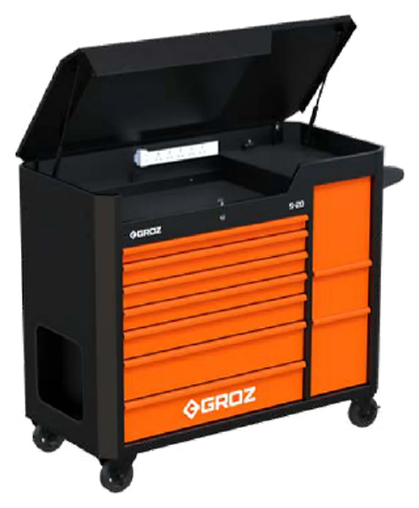

GROZ · Tool Storage
50" Rolling Tool Cabinets with Lid S20 Series
CAT NR RTCL/50-20/1/GRZ · ORD NR 75205
| CAT NR (catalogue number) | RTCL/50-20/1/GRZ |
|---|---|
| ORD NR (order number) | 75205 |
| Box quantity | 1 |
| Overall load capacity | 700 KG (1543 LBS) |
| Drawer load capacity | 35 KG (77 LBS) |
| Net weight | 150 KG (330 LBS) |
| Steel gauge | 1.2 mm (18 gauge) |
| Series | S20 Series |
Open in the catalogue The catalogue PDF, page 22-23
From the GROZ Tool Storage catalogue. Not yet verified: these details were read from the printed catalogue automatically; check the catalogue page before ordering.